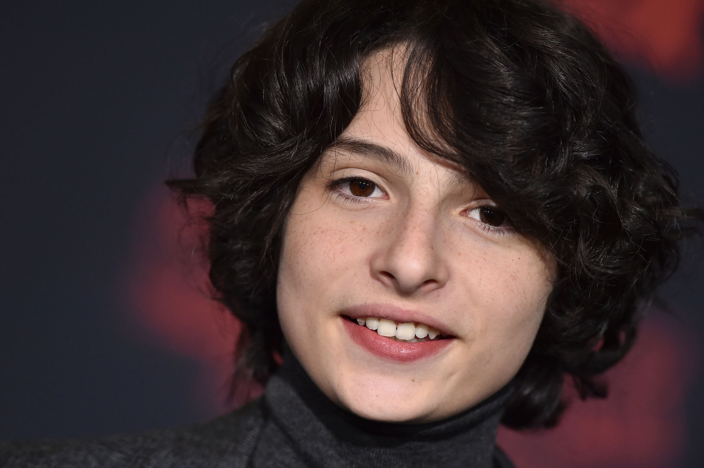
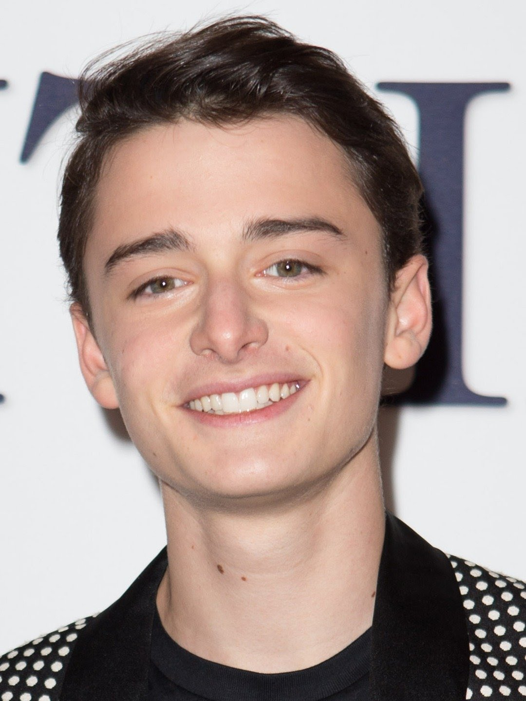
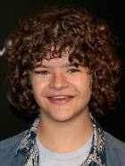
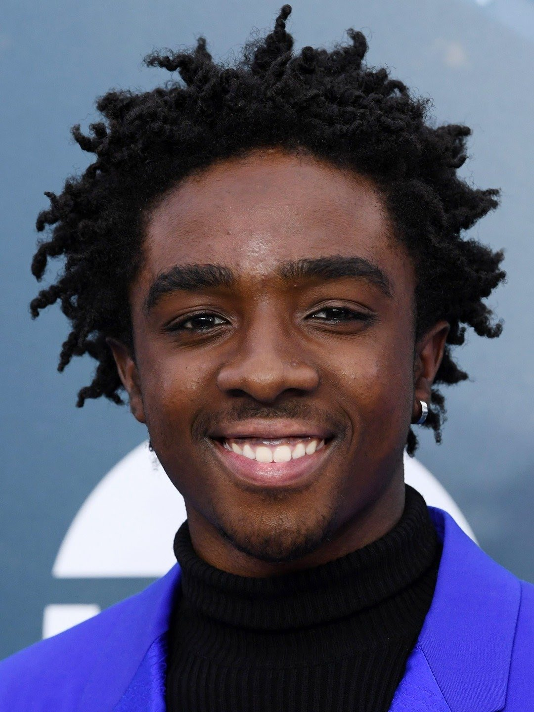
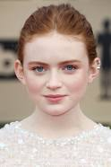

Millie Bobby Brown fez o papel da personagem Eleven(Onze), uma dos protagonistas principais. Nascida em 19 de Fevereiro de 2004 (idade 18 anos), Britânica nascida em Marbella, nascida na Espanha, e além de atriz ela também é cantora

Finn Wolfhard
Finn Wolfhard fez o papel do personagem Mike, um dos protagonistas principais. Nascido em 23 de Dezembro de 2002 (idade 19 anos), Canadense nascido em Vancouver, além de ator ele também é músico, roterista e diretor.

Noah Schnapp
Noah Schnapp fez papel do personagem Will Byers, um dos personagens principais e um dos mais impotantes. Nascido em 3 de Outubro de 2004 (idade 17 anos), Norte-Americano nascido em Scardale, ele de voz a Charlie Brown no filme The Peanuts Movie.

Gaten Matarazzo
Gaten Matarazzo fez o papel do Dustin, um dos personagens principais. Nascido em 8 de Setembro de 2002 (idade 19 anos), Norte-Americano nascido em Connecticut, ele é vocalista na banda Work In Progress

Caleb McLaughlin
Caleb McLaughlin fez o papel de Lucas, um dos personagens principais. Nascido em 13 de Outubro de 2001 (idade 20), Norte-Americano nascido em Carmel, em 2017, encarnou a versão mais nova do cantor Ricky Bell na minissérie "The New Edition Story". Em 2018, estreou nas telonas com o filme "High Flying Bird", dirigido por Steven Soderbergh.

Sadie Sink Sadie Sink fez o papel da Maxine, uma dos personagens principais. Nascida em 16 de Abril de 2002 (idade 20 anos), Norte-Americana nascida em Brenham, ela também já encarnou a jovem Haley em "Eli" (2019), filme de terror dirigido por Ciarán Foy.